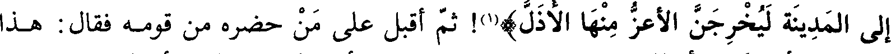
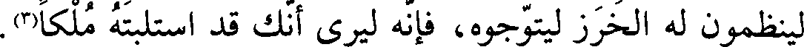
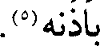
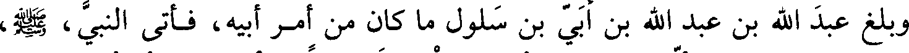
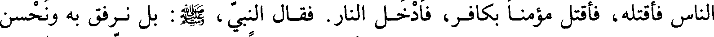

File: 000720.gt.txt (if the image is defective, simply delete all Arabic text and the line will be excluded)

الخزرج، على الماء، فاقتتلا، فصرخ الجهني: يا معشر الأنصار! وصرخ جهجاه: يا
File: 000721.gt.txt (if the image is defective, simply delete all Arabic text and the line will be excluded)

معشر المهاجرين! فغضب عبد الله بن أبي بن سلول، وعنده رهط من قومه فيهم زيد بن
File: 000722.gt.txt (if the image is defective, simply delete all Arabic text and the line will be excluded)

أرقم، غلام حدث السن. فقال: أوقد فعلوها! قد كاثرونا في بلادنا! أما والله (لئن رجعنا
File: 000723.gt.txt (if the image is defective, simply delete all Arabic text and the line will be excluded)

إلى المدينة ليخرجن الأعز منها الأذل)(1)! ثم أقبل على من حضره من قومه فقال: هذا
File: 000724.gt.txt (if the image is defective, simply delete all Arabic text and the line will be excluded)
ما فعلتم بأنفسكم! أحللتموهم ببلادكم وقاسمتموهم أموالكم! والله لو أمسكتم عنهم ما
File: 000725.gt.txt (if the image is defective, simply delete all Arabic text and the line will be excluded)

بأيديكم لتحولوا إلى غير بلادكم.
File: 000726.gt.txt (if the image is defective, simply delete all Arabic text and the line will be excluded)

فسمع ذلك زيد، فمشى به إلى النبي، صلي الله عليه و سلم، وذلك عند فراغ رسول الله، صلي الله عليه و سلم، من
File: 000727.gt.txt (if the image is defective, simply delete all Arabic text and the line will be excluded)

غزوه، فأخبره الخبر، وعنده عمر بن الخطاب، فقال: يا رسول الله صعلم مر به عباد بن بشر
File: 000728.gt.txt (if the image is defective, simply delete all Arabic text and the line will be excluded)

فليقتله. فقال رسول الله، صلي الله عليه و سلم: (كيف إذا تحدث الناس أن محمدا يقتل أصحابه! ولكن
File: 000729.gt.txt (if the image is defective, simply delete all Arabic text and the line will be excluded)
أذن بالرحيل). فارتحل في ساعة لم يكن يرتحل فيها، ليقطع ما الناس فيه(2).
File: 000730.gt.txt (if the image is defective, simply delete all Arabic text and the line will be excluded)

فلقيه أسيد بن حضير فسلم عليه وقال: يا رسول الله صعلم لقد رحت في ساعة لم تكن
File: 000731.gt.txt (if the image is defective, simply delete all Arabic text and the line will be excluded)

تروح فيها. فقال: (أوما بلغك ما قال عبد الله بن أبي)؟ قال: وماذا؟ قال: (زعم إن رجع
File: 000732.gt.txt (if the image is defective, simply delete all Arabic text and the line will be excluded)

الي المدينة، ليخرجن الاعز منها الاذل). قال اسيد: فأنت و الله تخرجه إن شئت، فإنك
File: 000733.gt.txt (if the image is defective, simply delete all Arabic text and the line will be excluded)

العزيز وهو الذليل، ثم قال: يا رسول الله ارفق به فوالله لقد من الله بك، وإن قومه
File: 000734.gt.txt (if the image is defective, simply delete all Arabic text and the line will be excluded)

لينظمون له الخرز ليتوجوه، فإنه ليرى أنك قد استلبته ملكا (3).
File: 000735.gt.txt (if the image is defective, simply delete all Arabic text and the line will be excluded)

وسمع عبد الله بن أبي أن زيدا أعلم النبي، صلي الله عليه و سلم، قوله فمشى إلى رسول الله، صلي الله عليه و سلم،
File: 000736.gt.txt (if the image is defective, simply delete all Arabic text and the line will be excluded)

فحلف بالله ما قلت ما قال ولا تكلمت به. وكان عبد الله في قومه شريفا، فقالوا: يا
File: 000737.gt.txt (if the image is defective, simply delete all Arabic text and the line will be excluded)
رسول الله عسى أن يكون الغلام قد أخطأه، وأنزل الله: (إذا جاءك المنافقون)(4)؛
File: 000738.gt.txt (if the image is defective, simply delete all Arabic text and the line will be excluded)
تصديقا لزيد، فلما نزلت أخذ رسول الله، صلي الله عليه و سلم، بأذن زيد وقال: هذا الذي أوفى الله
File: 000739.gt.txt (if the image is defective, simply delete all Arabic text and the line will be excluded)

بأذنه(5).
File: 000740.gt.txt (if the image is defective, simply delete all Arabic text and the line will be excluded)

وبلغ عبد الله بن أبي بن سلول ما كان من أمر أبيه، فأتى النبي، صلي الله عليه و سلم،
File: 000741.gt.txt (if the image is defective, simply delete all Arabic text and the line will be excluded)
فقال: يا رسول الله بلغني أنك تريد قتل أبي، فإن كنت فاعلا فملاني به، فأنا أحمل إليك
File: 000742.gt.txt (if the image is defective, simply delete all Arabic text and the line will be excluded)

رأسه، وأخشى أن تأمر غيري بقتله، فلا تدعني نفسي أنظر إلى قاتل أبي يمشي في
File: 000743.gt.txt (if the image is defective, simply delete all Arabic text and the line will be excluded)

الناس فأقتله، فأقتل مؤمنا بكافر، فأدخل النار. فقال النبي، صلي الله عليه و سلم، بل نرفق به ونحسن
File: 000744.gt.txt (if the image is defective, simply delete all Arabic text and the line will be excluded)
صحبته(6) ما بقي معنا(7). فكان بعد ذلك إذا أحدث حدثا عاتبه قومه وعنفوه وتوعدوه،
File: 000745.gt.txt (if the image is defective, simply delete all Arabic text and the line will be excluded)

باللحم(1)، وكنت إذا وصل بعيري جلست في هودجي، ثم يأتي القوم الذين يرحلون
File: 000746.gt.txt (if the image is defective, simply delete all Arabic text and the line will be excluded)
بعيري، فيحملون الهودج وأنا فيه، فيضعونه على ظهر البعير، ثم يأخذون برأس البعير
File: 000747.gt.txt (if the image is defective, simply delete all Arabic text and the line will be excluded)

ويسيرون .
File: 000748.gt.txt (if the image is defective, simply delete all Arabic text and the line will be excluded)

قالت: فلما قفل رسول الله، صلي الله عليه و سلم، من سفره ذلك، وكان قريبا من المدينة، بات
File: 000749.gt.txt (if the image is defective, simply delete all Arabic text and the line will be excluded)

بمنزل بعض الليل، ثم ارتحل هو والناس، وكنت قد خرجت لبعض حاجتي، وفي عنقي
To Save: `Ctrl+s`, make sure to choose `Webpage, complete`!